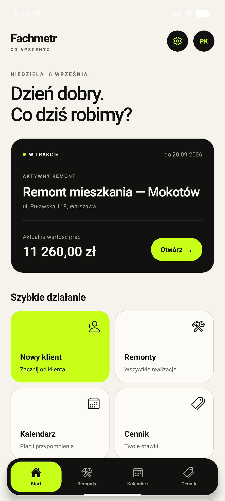
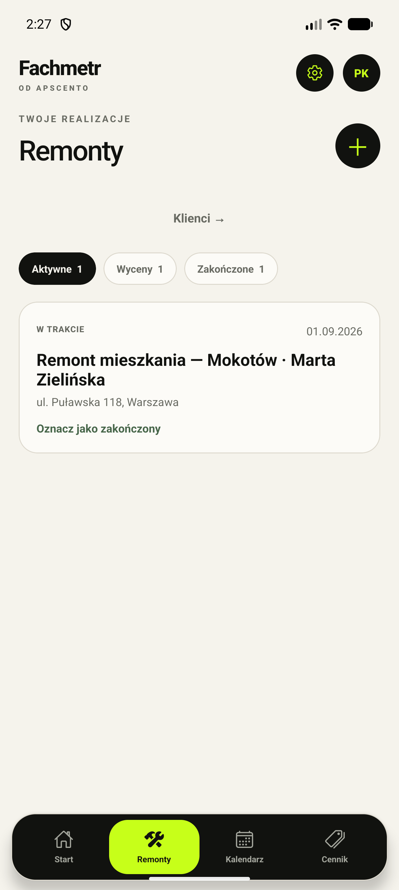
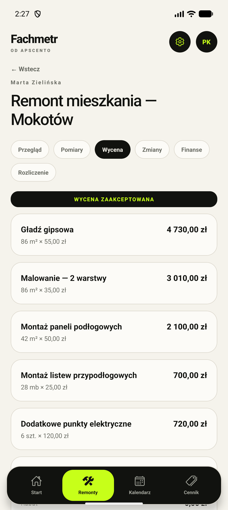
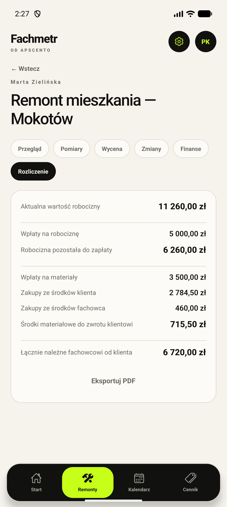
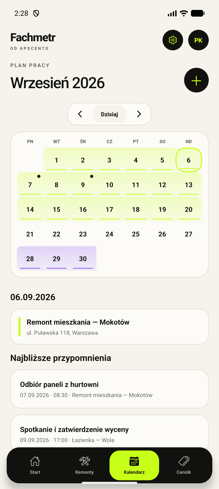
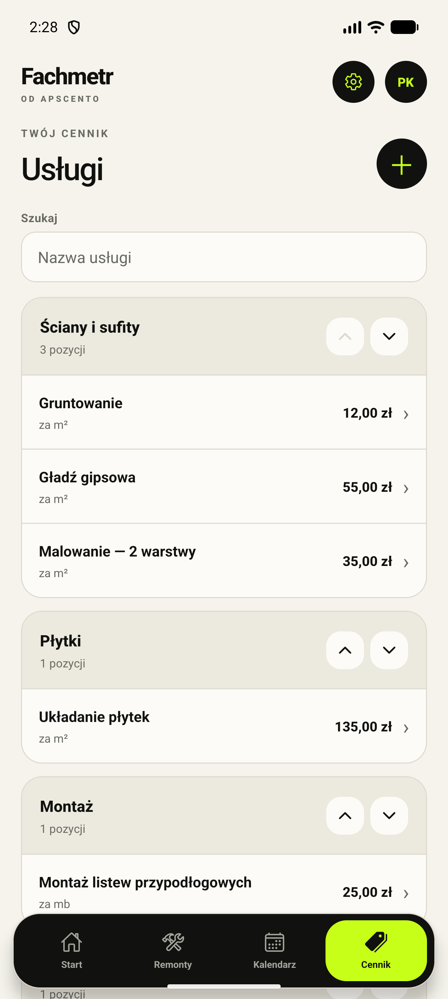

Pomiary i wyceny
Pozycje, ilości i ceny zebrane w czytelną wycenę dla konkretnego klienta.
Fachmetr powstaje dla fachowców, którzy chcą mieć wycenę, zakres prac, materiały, terminy i rozliczenie w jednym miejscu.

01
Dla kogo
Jednoosobowe firmy i małe ekipy często prowadzą remont w notesie, komunikatorze i kilku arkuszach naraz. Fachmetr łączy te informacje w prostą historię zlecenia — od klienta do końcowego rozliczenia.
Co porządkuje
Fachmetr jest nadal rozwijany. Pokazane funkcje opisują działający prototyp i obecny kierunek produktu.
Pozycje, ilości i ceny zebrane w czytelną wycenę dla konkretnego klienta.
Zaakceptowana baza prac i późniejsze zmiany widoczne osobno, bez gubienia ustaleń.
Wpłaty klienta, wydatki materiałowe i należna kwota w jednym podsumowaniu.
Kalendarz realizacji pomaga pamiętać o etapach prac, płatnościach i spotkaniach.
Uporządkowane wyceny i podsumowania gotowe do przekazania klientowi.
Obecny projekt działa lokalnie na urządzeniu, bez konta i stałego dostępu do sieci.
Aplikacja w praktyce
To rzeczywiste ekrany rozwijanego prototypu. Nazwiska, adresy i kwoty są wyłącznie danymi demonstracyjnymi.





Wersja testowa
Pobierz plik instalacyjny APK i przetestuj aplikację offline na Androidzie — bez komputera, bez konta.
Android poprosi o zgodę na instalację z nieznanego źródła — to normalne poza Google Play.
Rozwój
Najpierw sprawdzamy cały przepływ na prawdziwych scenariuszach. Termin pierwszego wydania podamy po zakończeniu testów.
Klient, pomiary, wycena, zakres, materiały, kalendarz i rozliczenie działają razem.
Sprawdzamy, czy najważniejsze informacje można dodać szybko także w ruchu.
Poprawki po testach, przygotowanie dokumentów i stabilnej wersji aplikacji.
FAQ
Jeszcze nie. Działający prototyp jest teraz testowany i dopracowywany przed pierwszym wydaniem.
Przede wszystkim dla samodzielnych fachowców i małych ekip remontowych, które prowadzą kilka zleceń i chcą uporządkować ich finanse oraz zakres.
Obecny prototyp przechowuje dane lokalnie i pozwala pracować bez stałego połączenia z internetem.
W obecnej wersji na urządzeniu użytkownika. Aplikacja nie wymaga konta ani synchronizacji z chmurą.
Bądź na bieżąco
Obserwuj Apscento albo napisz, jeśli chcesz wiedzieć o rozpoczęciu testów.